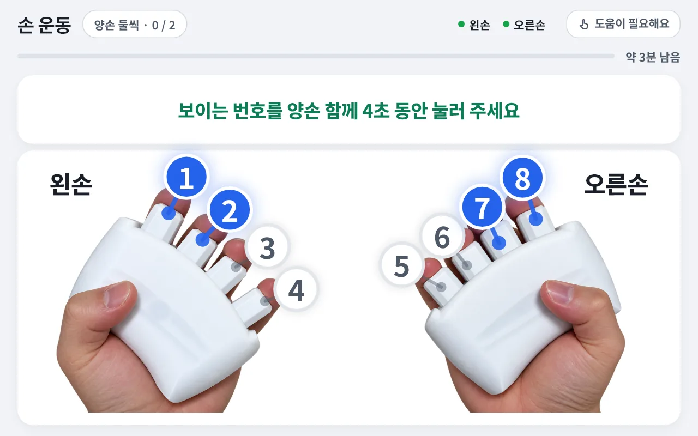
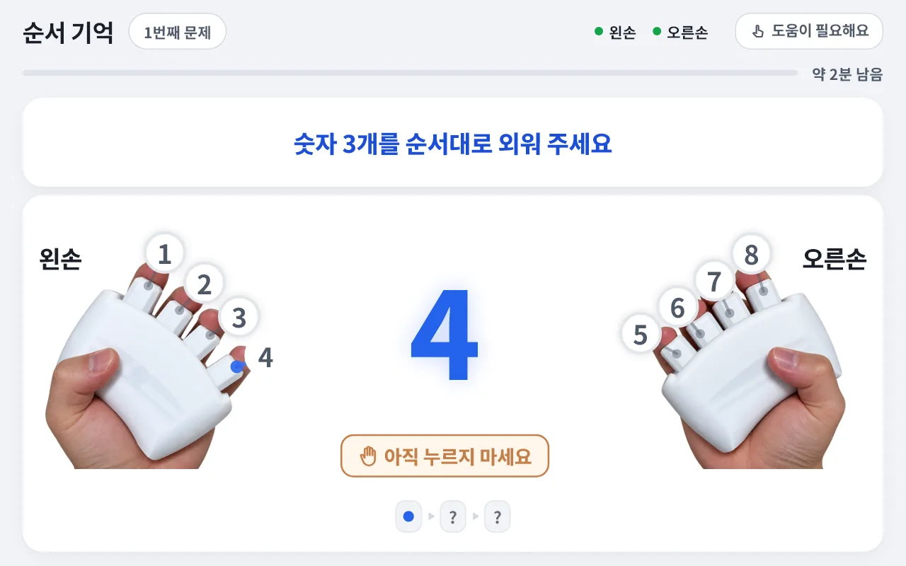

센터용
도입 문의 받는 중복지관 · 경로당 · 주·야간보호센터 · 요양시설
- 쓰는 분
- 프로그램 담당자와 어르신
- 구성
- 햅틱 그립 + 태블릿 앱 + 관리자 웹
- 이용 방식
- 담당자가 프로그램을 진행하고, 기록은 관리자 웹에서 관리합니다
THE GRIP
사용자는 화면·소리·진동 등의 안내에 따라 손가락을 움직이고, 기억하거나 박자에 맞춰 반응하는 과제에 참여합니다. 반복 훈련을 더 흥미롭게 이어갈 수 있도록 다양한 활동과 수행 기록을 결합하는 것을 지향합니다.
독립 진동·입력 구조는 국내 특허 출원 중입니다(3건, 등록 전).
THREE ACTIVITIES
그립의 버튼 여덟 개로, 화면이 알려 주는 대로 누릅니다.
켜진 번호를 정해진 시간 동안 꾹 누르고 버팁니다. 한 손가락에서 시작해 양손 네 손가락까지, 여러 가지 모양으로 이어집니다.
음악에 맞춰 내려오는 노트가 빛 고리에 닿을 때 그 번호를 누릅니다. 느리게·빠르게, 두 가지 빠르기로 즐기고, 잘 맞히면 곡에 악기가 하나씩 더해집니다.
하나씩 나오는 숫자를 기억해 같은 순서로 누릅니다. 맞으면 초록 카드, 틀리면 빨간 카드로 정답을 보여 드립니다.
준비 중인 콘텐츠 (계획 · 시점 미정)


화면은 개발 중인 앱의 실제 화면을 바탕으로 만든 예시이며, 제품 사양과 화면은 바뀔 수 있습니다.
TWO WAYS TO USE
Rehaptic은 센터용과 가정용으로 나누어 제공할 예정입니다. 쓰는 분, 구성, 이용 방식이 서로 다릅니다.
복지관 · 경로당 · 주·야간보호센터 · 요양시설
어르신과 가족
CONTACT
센터 도입과 제휴는 편하게 문의해 주세요. 가정용 소식은 가정용 페이지에서 받아 보실 수 있습니다.